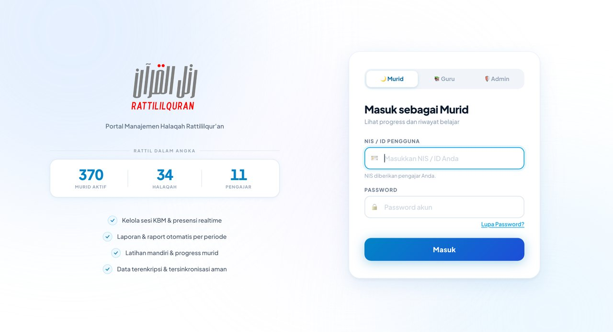
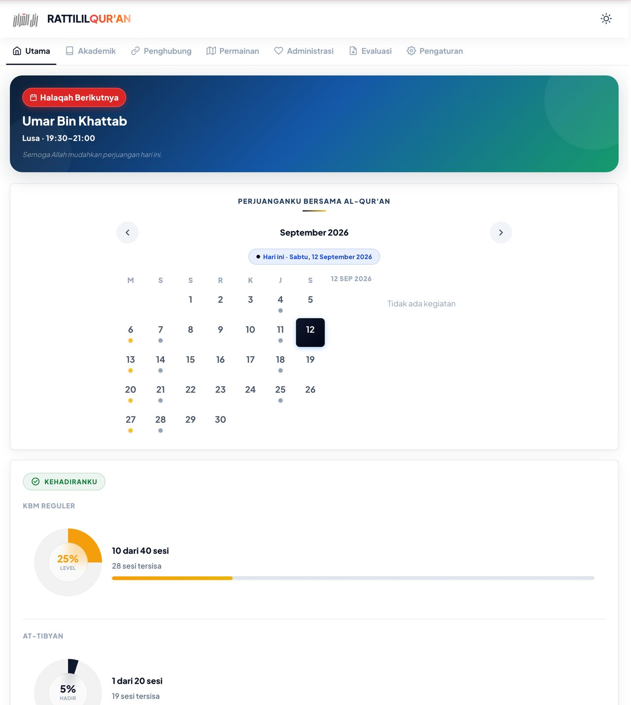
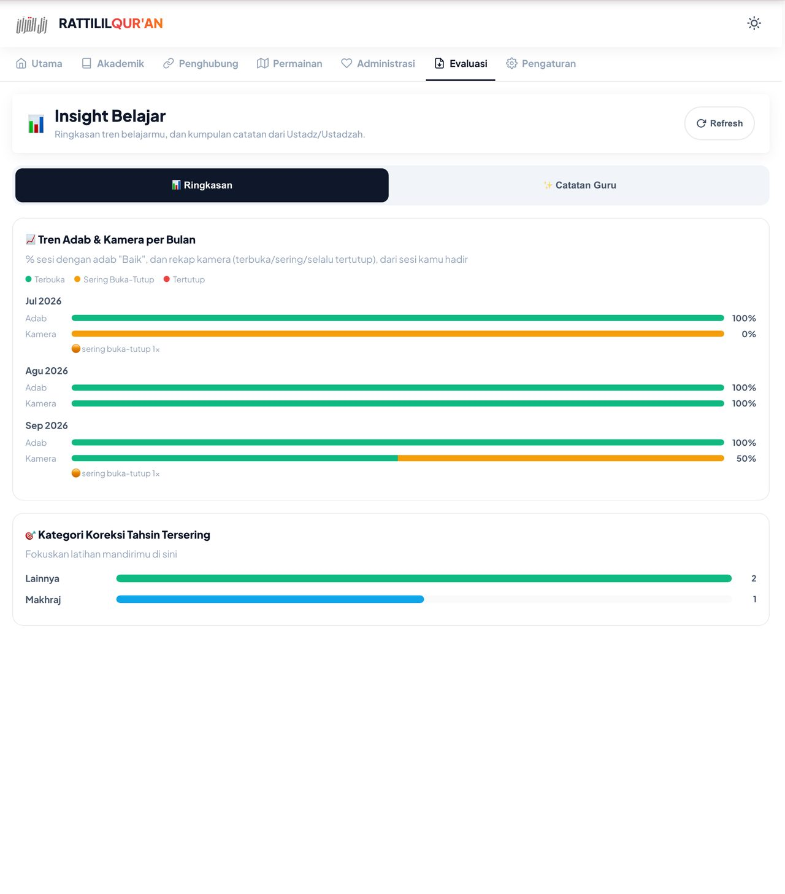
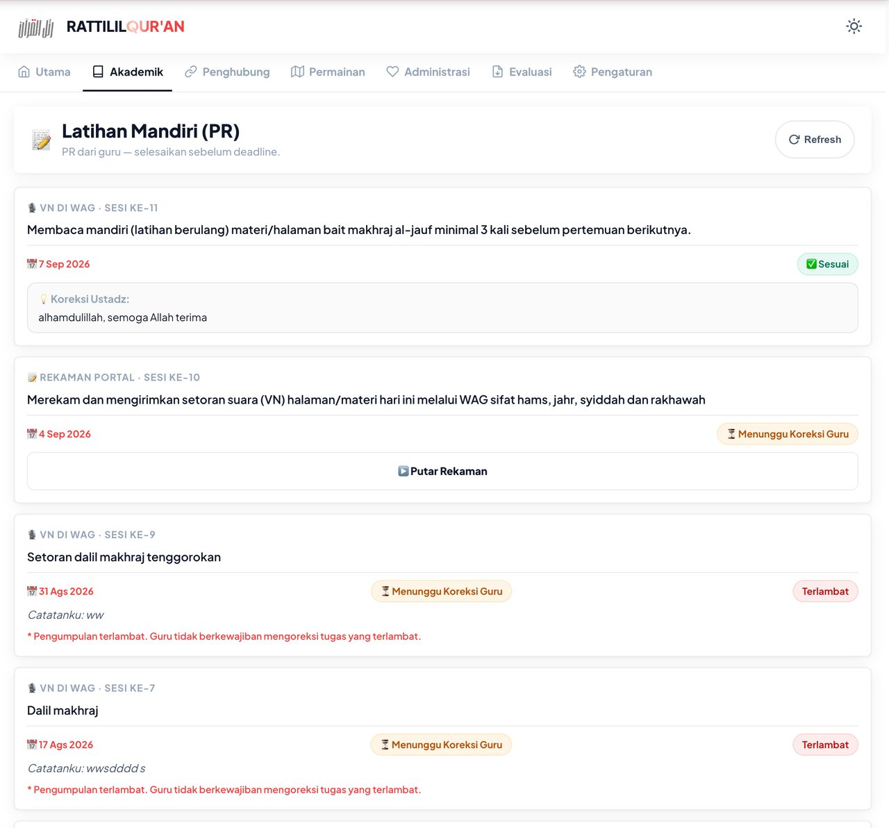
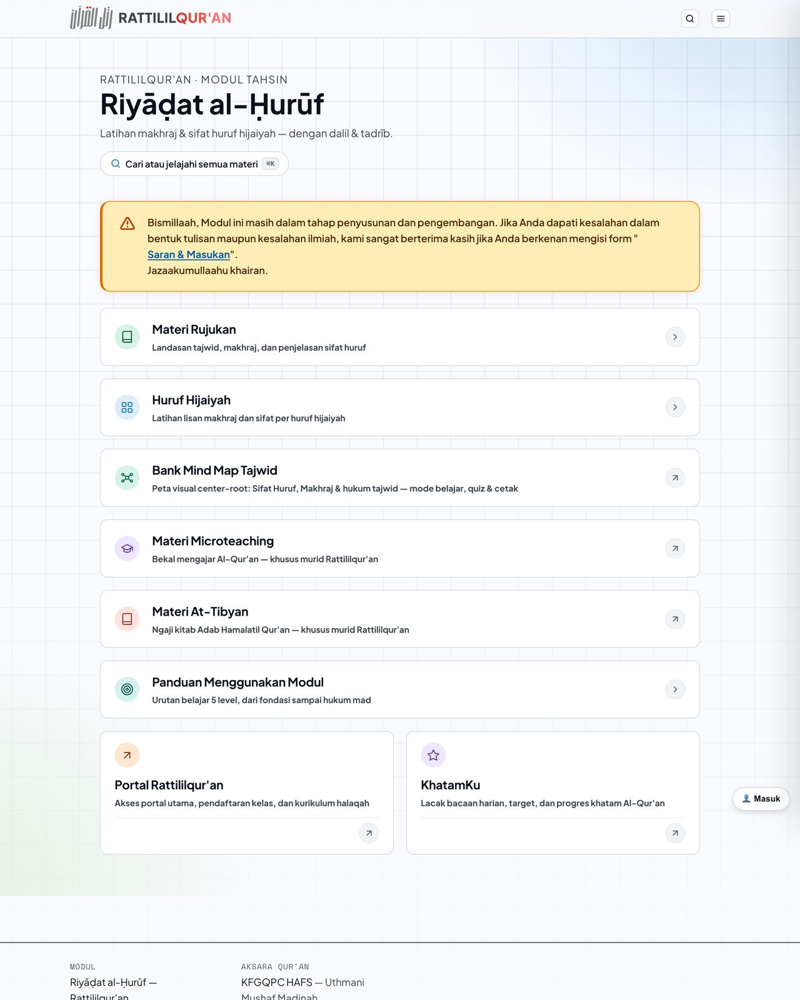
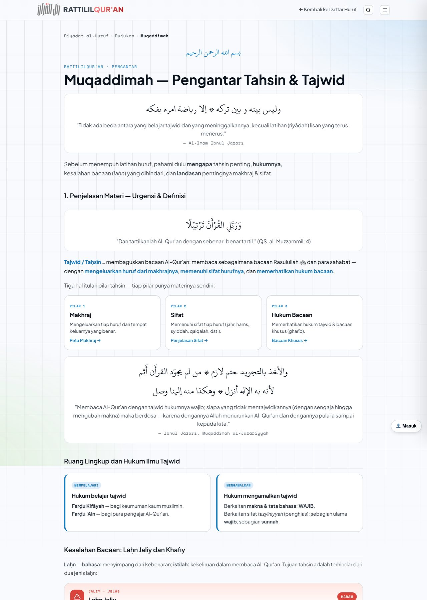

Portal Murid & Modul Belajar
Rattil bukan hanya halaqah. Setiap murid mendapat akun portal untuk memantau presensi, raport, dan progres — dan bahan latihan yang sama dipakai pengajar di kelas maupun murid di rumah.
Tiga hal yang membuat belajar jadi tidak jelas arah — dan bagaimana kami menutupnya. Biidznillah
Bukan tentang fitur. Ini tentang tiga masalah nyata yang biasanya baru terasa setelah beberapa bulan belajar.
-
01
Progres tidak terlihat, hanya terasa. Setelah beberapa bulan, sulit menjawab "sudah sampai mana bacaan saya?". Portal mencatat presensi tiap sesi dan menyusun raport otomatis per periode, jadi kemajuannya bisa dibuka sendiri — bukan cuma diingat-ingat.
-
02
Catatan berserakan di grup chat. Jadwal, materi, dan pengumuman bercampur dengan percakapan lain, lalu tenggelam. Di portal, semuanya menempel pada halaqah Anda dan tersimpan di satu akun.
-
03
Latihan di rumah tanpa arahan. Mengulang sendiri tanpa panduan berisiko memperkuat kesalahan. Modul Riyāḍat al-Ḥurūf menyusun latihan bertahap — huruf, lalu kata, lalu ayat — dengan dalil dan contoh yang sudah diverifikasi pengajar.
Satu akun untuk presensi, raport, dan latihan.
Portal Manajemen Halaqah Rattililqur'an dipakai murid, guru, dan admin. Murid masuk dengan NIS yang diberikan pengajar, dan bisa memasangnya di layar utama HP seperti aplikasi.

Yang ada di dalam akun murid
- Utama Beranda · Pengumuman · Saran & Masukan
- Akademik & KBM Riwayat KBM · Materi Level · Latihan Mandiri (PR) · Kajian At-Tibyan · Setoran Hafalan · Partner Belajar · Rattil Quiz
- Permainan Petualangan · Rattil Run
- Administrasi Pembayaran & Infaq
- Evaluasi Assessment Mandiri · Raport · Insight Belajar · Charging
- Pengaturan & Bantuan Notifikasi · Mode Gelap · Panduan · Pengingat Kalender HP · Install Aplikasi · Ganti Password
Yang paling sering dibuka murid
Tiga tampilan berikut diambil dari portal yang sedang berjalan.



Coba dulu modulnya — terbuka dan gratis.
Riyāḍat al-Ḥurūf adalah modul tahsin Rattililqur'an: latihan makhraj dan sifat huruf, dengan dalil dan latihan. Modul ini dibuat bukan hanya untuk murid, tapi untuk kaum muslimin yang ingin belajar tahsin — silakan dimanfaatkan selama bukan untuk tujuan komersial.

Isi modul
-
01
Materi Rujukan Landasan tajwid, makhraj, dan penjelasan sifat huruf.
-
02
Huruf Hijaiyah Latihan lisan makhraj dan sifat per huruf hijaiyah.
-
03
Bank Mind Map Tajwid Peta visual center-root untuk sifat huruf, makhraj, dan hukum tajwid — dengan mode belajar, quiz, dan cetak.
-
04
Materi Microteaching Khusus murid Bekal mengajar Al-Qur'an, untuk murid Rattililqur'an.
-
05
Materi At-Tibyan Khusus murid Ngaji kitab Adab Hamalatil Qur'an, untuk murid Rattililqur'an.
-
06
Panduan Menggunakan Modul Urutan belajar lima level, dari fondasi sampai hukum mad.

Yang terbuka untuk semua, dan yang khusus untuk murid
Modulnya bisa dicoba siapa saja. Bagian berikut hanya terbuka setelah Anda resmi bergabung dalam halaqah.
-
Setoran Hafalan Menu setoran dan raport tahfidz di portal, terkunci sebelum akun murid aktif.
-
Materi Microteaching Bekal mengajar Al-Qur'an — untuk murid yang menyiapkan diri mengajar.
-
Materi At-Tibyan Kajian kitab Adab Hamalatil Qur'an, bersama para pengajar.
Apa yang Anda dapat setelah bergabung
-
01
Akun portal muridNIS diberikan pengajar, dengan akses ke presensi, materi, dan riwayat belajar.
-
02
Presensi realtime & raport otomatisTercatat tiap sesi, dirangkum otomatis per periode.
-
03
Latihan mandiri & progressTugas, koreksi pengajar, dan capaian dalam satu tempat.
-
04
Portal bisa dipasang di HPMendukung PWA, jadi bisa dibuka dari layar utama seperti aplikasi.
-
05
Materi khusus muridMicroteaching dan At-Tibyan, plus setoran hafalan di portal.
Siap mulai?
Pendaftaran dibuka berkala dengan kuota kecil per halaqah. Lihat langkahnya di halaman utama — empat langkah, tanpa tes masuk.